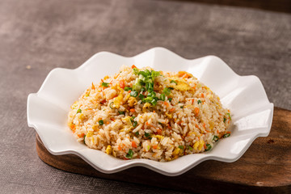

Egg Fried Rice

Go back to HOME
Description 📖
Egg fried rice is a classic comfort food that's incredibly simple to make. Fluffy scrambled eggs are tossed with
cold rice and colorful vegetables in a hot wok, all coated in a savory soy sauce seasoning. It's the perfect way
to use leftover rice and turns a few humble ingredients into a delicious, satisfying meal in just 10 minutes.
It's quick, budget-friendly, and guaranteed to make everyone smile.Enjoy! 🍛
Ingredients 🛒
For the Rice
- 2 cups cooked rice (preferably cold, day-old)
- 2 tbsp oil (vegetable or sesame)
- 2 eggs, lightly beaten
- 1 small onion, finely chopped
- 1/2 cup mixed vegetables (peas, carrots, corn - fresh or frozen)
- 2-3 cloves garlic, minced
- 2 tbsp soy sauce
- 1/2 tsp black pepper powder
- Salt to taste
For Garnish
Step By Step Process
Step 1: Prep Everything
- If using fresh vegetables, dice the carrots and onion finely.
- Beat the eggs in a small bowl with a pinch of salt.
- Have all ingredients ready near the stove—this dish cooks very fast!
Step 2: Scramble the Eggs
- Heat 1 tbsp oil in a large wok or frying pan over medium-high heat.
- Pour in the beaten eggs and let them set for 30 seconds.
- Gently scramble them with a spatula until just cooked but still soft.
- Remove the eggs from the pan and set aside.
Step 3: Sauté Aromatics and Veggies
- Add the remaining 1 tbsp oil to the same pan.
- Add minced garlic and chopped onion. Sauté for 1-2 minutes until fragrant.
- Add the mixed vegetables and stir-fry for 2-3 minutes until tender.
Step 4: Add the Rice
- Add the cold cooked rice to the pan. Break up any clumps with your spatula.
- Stir and toss for 2-3 minutes until the rice is heated through and well mixed.
Step 5: Season and Combine
- Add soy sauce, black pepper, and salt to taste. Mix well.
- Return the scrambled eggs to the pan.
- Toss everything together for 1-2 minutes until well combined and heated through.
Step 6: Garnish and Serve
- Transfer to a serving bowl.
- Garnish generously with chopped spring onions.
- Serve hot as a meal or side dish.